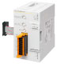
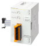

MELSEC iQ-F series Safety extension module

Safety main module
| Item | Total No. of points | Safety inputs | Safety outputs | Safety integrity level (SIL) | Performance level (PL) | Off delay time | Built-in program | Connection type | Compatible CPU module | ||||
|---|---|---|---|---|---|---|---|---|---|---|---|---|---|
| FX5U | FX5UC | FX5UJ | FX5S | ||||||||||
|  | FX5-SF-MU4T5 | 8 points | 4 points | 4 points | SIL3 (IEC 61508) | PL e (DIN EN ISO 13849-1) | 0 / 0.5 / 1 /1.5 / 2 / 2.5 / 3 / 3.5 / 4 / 5 s | 9 types | Spring clamp terminal block | ○ | * ○ |
○ | × |
- *When connecting to FX5UC, FX5-CNV-IFC or FX5-C1PS-5V is required.
Safety expansion module
Safety input expansion module
| Item | Total No. of points | Safety inputs | Safety outputs | Safety integrity level (SIL) | Performance level (PL) | Off delay time | Built-in program | Connection type | Compatible CPU module*3 | ||||
|---|---|---|---|---|---|---|---|---|---|---|---|---|---|
| FX5U | FX5UC | FX5UJ | FX5S | ||||||||||
|  | FX5-SF-8DI4 | 8 points | 8 points | 0 points | SIL3 (IEC 61508) | PL e (DIN EN ISO 13849-1) | *1 | *2 9 types |
Spring clamp terminal block | ○ | *4 ○ |
○ | × |
- *1Set the off delay time in the safety main module.
- *2The built-in program can set the logical path connection method with the safety main module for INPUT A and INPUT B each.
- *3Safety main module is required to connect to the CPU modules.
- *4When connecting to FX5UC, FX5-CNV-IFC or FX5-C1PS-5V is required.
Concept
Easily create a system just by connecting a safety extension module.
A safety control system can easily be installed just by connecting a safety main module (FX5-SF-MU4T5) to an FX5U/FX5UC/FX5UJ CPU module.
This single system can then be used to perform general-purpose control and safety control. Therefore, there is no need for wiring such as the one needed for monitoring the safety status (as is necessary with a safety controller) or the wiring needed between relays when constructing a system with safety relays.
Furthermore, the number of safety inputs can be expanded by connecting safety input expansion modules (FX5-SF-8DI4).
Turn the rotary switch to select the built-in program.
Each safety extension module has nine types of built-in programs. To build a safety control system, just use the rotary switch on the front of the module to select the built-in program to run.
This eliminates the need for sequence programs designed for safety control.
Using the Safety Extension Module Configuration Guide to determine the wiring at a glance!
We have prepared the MELSEC iQ-F Series Safety Extension Module Configuration Guide to enable users to use the safety extension module.
This configuration guide is a tool for easily checking the system configuration, settings, and wiring of the safety extension module.
The MELSEC iQ-F Series was developed and manufactured by SICK AG. SICK is a German supplier of safety solutions.
SICK designs and manufactures a broad range of safety products including industrial-use sensors and automatic identification systems.
* General specifications and product guarantee conditions for co-branded products may vary from those of general MELSEC products.
For more information, please refer to the relevant product manuals or contact your local Mitsubishi Electric sales office or representative.
SICK AGhttp://www.sick.com